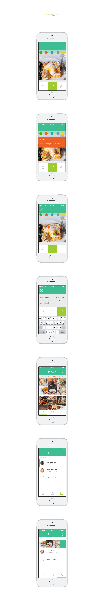

The main features of Foodio include the camera, partners list, newsfeed, and personal statistics page. Every time a person records their meal, they are prompted to tag it with food groups such as Protein, Veggies, etc. This feature motivates users to achieve a balanced diet through visual introspection.
Collaborative 4 week project with Cathy Lee, Josh Inch, HyunJey Kim and Chuya Lee that was completed last Winter. I ensured consistent visual identity across pages and precision behind the interactions. View the original prototype and motion graphic before I redesigned the interface.


